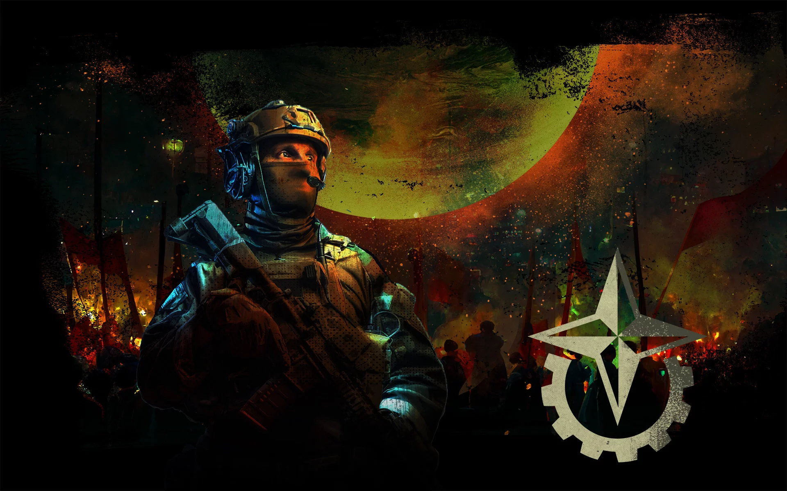
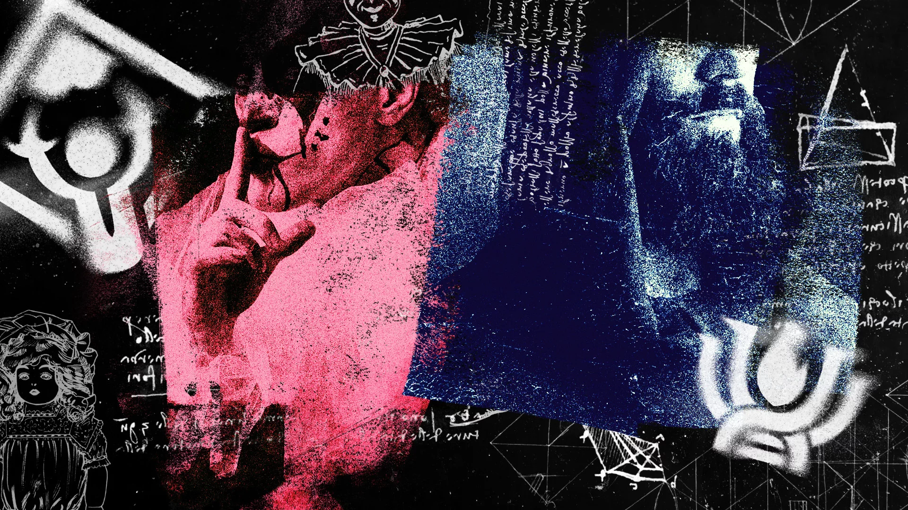

"When the Europa Coalition was gathering influence, their main political rival was the Jovian People’s Movement."
“The JPM was not behind the assassination. The Movement strives to make Europa a more democratic society“
A political party called the Jovian People’s Movement. The JPM was formed around the same time as the Coalition, and was in direct opposition to the political ideals and methods of their rival. The JPM wanted to build a democratic society on Europa through nonviolent means and model it after earlier civilizations on Earth. The Movement amassed a large number of supporters and became a noteworthy challenger to the Coalition in the general election of Europa.

Europan Coalition
"It’s taken us decades of literal blood and sweat to shape this place into what it is now"
“Those people just don’t get it. We’ve reached a point where this isn’t just a couple of research stations where people come to work for a year or two. This is our home now“
A few decades later, after contact with Earth was suddenly lost and Europan society threatened to fall into complete chaos, the Coalition’s established system of trade and governance became even more important. Legislation developed by the Coalition, such as the Resource Balancing and Control Act, further cemented their rule by regulating trade with settlements which opposed the Coalitions’ ideology.

The Outcasts
"Europa has some mysterious groups across each station, each with their own goofy & ungodly like desires"
“It can take you way beyond the limits of that fleshbag you call your body!“
The Church worships the alien species Velonaceps calyx, more commonly known as the husk parasite, which makes itself at home in an unsuspecting victim’s throat, eventually turning them into a mindless monster. That does not sound like a fate anyone would choose willingly, but the Church believes the husk holds the key to humanity’s survival on Europa.
“You might want to keep an eye on them. They’ve got some crawlers in the attic, if you get what I mean“
Perhaps the most baffling of all the Europan factions are the clowns. The ocean is vast enough and the submarines claustrophobic enough to drive anyone mad, but is it really psychological troubles that drive some citizens to don red rubber noses and honk bikehorns at passers-by? Are they entertainers, hired in some misguided attempt at lifting morale? And who in the heavens is the Honkmother?